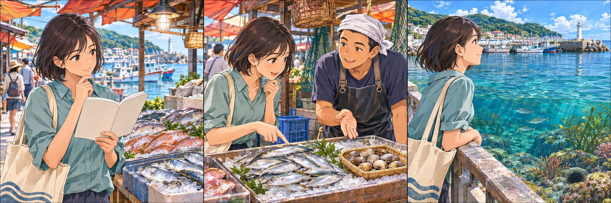
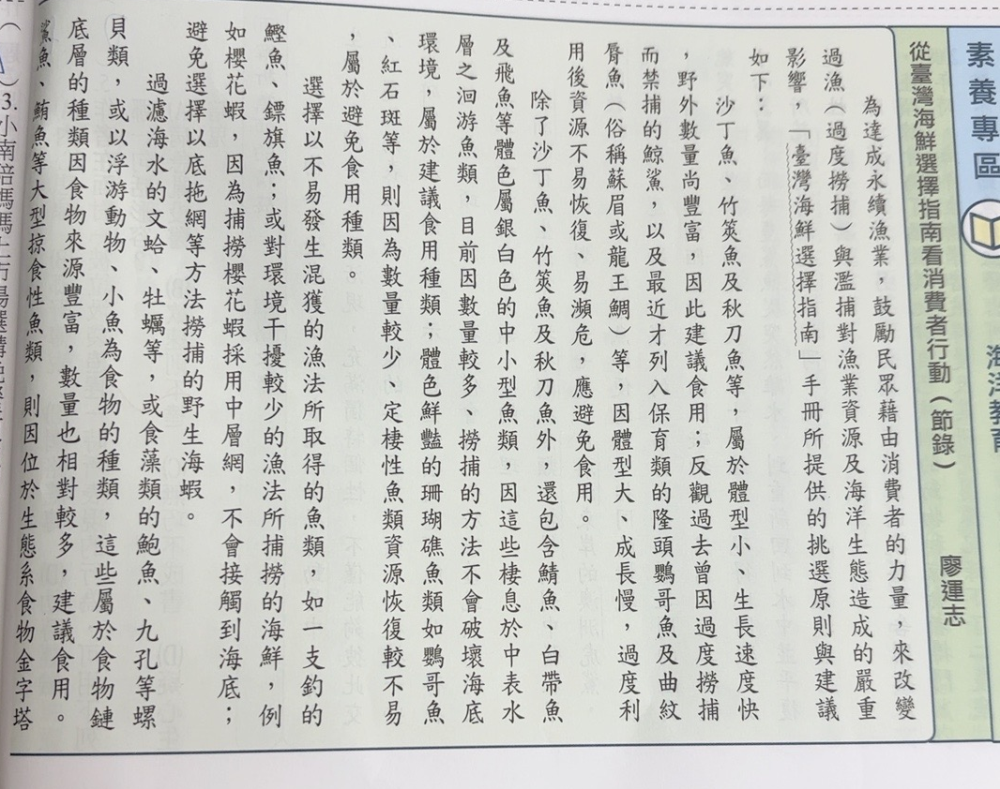
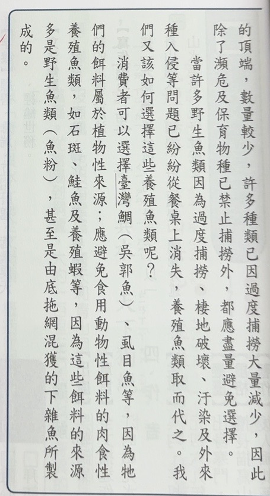
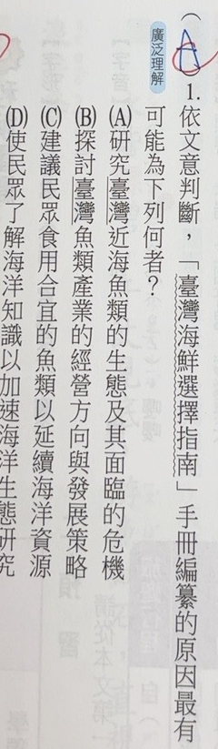
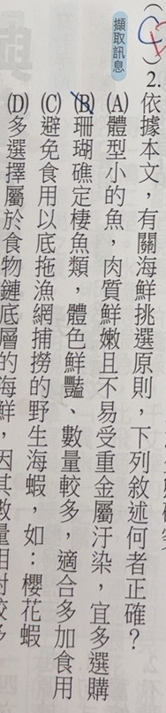

完整原題
作答所需文章／材料
從臺灣海鮮選擇指南看消費者行動（節錄） 廖運志 為達成永續漁業，鼓勵民眾藉由消費者的力量，來改變過漁（過度撈捕）與濫捕對漁業資源及海洋生態造成的嚴重影響，「臺灣海鮮選擇指南」手冊所提供的挑選原則與建議如下： 沙丁魚、竹筴魚及秋刀魚等，屬於體型小、生長速度快，野外數量尚豐富，因此建議食用；反觀過去曾因過度撈捕而禁捕的鯨鯊，以及最近才列入保育類的隆頭鸚哥魚及曲紋唇魚（俗稱蘇眉或龍王鯛）等，因體型大、成長慢，過度利用後資源不易恢復，易瀕危，應避免食用。 除了沙丁魚、竹筴魚及秋刀魚外，還包含鯖魚、白帶魚及飛魚等體色屬銀白色的中小型魚類，因這些棲息於中表水層之洄游魚類，目前因數量較多、撈捕的方法不會破壞海底環境，屬於建議食用種類；體色鮮豔珊瑚礁魚類如鸚哥魚、紅石斑等，則因為數量較少、定棲性魚類資源恢復較不易，屬於避免食用種類。 選擇以不易發生混獲的漁法所取得的魚類，如一支釣的鰹魚、鏢旗魚；或對環境干擾較少的漁法所捕撈的海鮮，例如櫻花蝦，因為捕撈櫻花蝦採用中層網，不會接觸到海底；避免選擇以底拖網等方法撈捕的野生海蝦。 過濾海水的文蛤、牡蠣等，或食藻類的鮑魚、九孔等螺貝類，或以浮游動物、小魚為食物的種類，這些屬於食物鏈底層的種類因食物來源豐富，數量也相對較多，建議食用。鯊魚、鮪魚等大型掠食性魚類，則因位於生態系食物金字塔的頂端，數量較少，許多種類已因過度捕撈大量減少，因此除了瀕危及保育物種已禁止捕撈外，都應盡量避免選擇。 當許多野生魚類因為過度捕撈、棲地破壞、汙染及外來種入侵等問題已紛紛從餐桌上消失，養殖魚類取而代之。我們又該如何選擇這些養殖魚類呢？ 消費者可以選擇臺灣鯛（吳郭魚）、虱目魚等，因為他們的餌料屬於植物性來源；應避免食用動物性餌料的肉食性養殖魚類，如石斑、鮭魚及養殖蝦等，因為這些餌料的來源多是野生魚類（魚粉），甚至是由底拖網混獲的下雜魚所製成的。國文第1題｜海鮮指南的編纂目的
國文第2題｜海鮮挑選原則的判讀
先想一想，再查看答案、解說與原圖
國文第1題｜海鮮指南的編纂目的
分享原卷｜第1題 · 首次出題日期 2026-11-04 · 原AI對話 ↗
逐項解析
| 選項與原句 | 判讀 | 句意與判斷理由 |
|---|---|---|
| (A) 研究臺灣近海魚類的生態及其面臨的危機 | 不選 | 相關研究背景不是這份消費者指南的直接目的。 |
| (B) 探討臺灣魚類產業的經營方向與發展策略 | 不選 | 不是以漁業公司經營策略為重點。 |
| (C) 建議民眾食用合宜的魚類以延續海洋資源 | 應選 | 對應引導消費選擇、減輕過漁影響、延續資源的目的。 |
| (D) 使民眾了解海洋知識以加速海洋生態研究 | 不選 | 不是要透過民眾加速科學研究。 |
詳細說明與解題步驟
找出編寫給誰、希望對方做什麼
開頭明說為達成永續漁業，鼓勵民眾藉消費者力量改變過漁、濫捕的影響，接著整篇提供挑選海鮮原則。因此手冊的直接目的是引導消費者選擇合宜食物，協助海洋資源延續，C最符合。
A的生態危機是相關背景與研究主題，不能直接代替面向消費者的手冊目的。B著重產業經營策略，文中未以業者為主要指導對象。D把目的變成加速科學研究，也不是文中消費者行動的方向。
文章推理是問題（過漁與濫捕損傷資源）→方法（提供選購指南、改變消費）→目的（永續利用海洋資源）。不要只因出現生態、海洋等相同字詞，就忽略誰採取何種行動。
本文的物種、保育現況語句及推薦名單依原卷保留，本題按文意判讀，不把節錄中的「目前」「最近」另當作現今資料更新日期。
編纂對象：消費者

① 讀者：會挑選海鮮的民眾
開頭直接說要藉由「消費者的力量」。這份指南面向民眾的日常選購，先抓住讀者與使用情境。
引導行動：依指南選購
② 方法：提供合宜選擇的原則
全文接著說明挑選原則與建議，要讓民眾改變消費選擇。不是只列海洋知識，也不是教業者擬經營策略。
本文目的示意：永續利用資源
③ 目的：延續海洋資源
選購原則是方法，永續漁業是目的。C把「民眾選擇」與「延續資源」連起來，最貼合開頭及全文。
④ 問清楚指南寫給誰、希望做什麼
答案 C：建議合宜食用以延續資源
- 讀者＝民眾；行動＝選擇合宜海鮮。
- 指南是方法，延續海洋資源是目的。
- A、D偏向研究，B偏業者策略，均非直接目的。
核對註記：已實看真正上傳原卷與裁圖，核對完整題幹、全部四選項及共用閱讀；日期為原始提問訊息的台灣日期，未提供實際考試日。未確認對應冊次、章節，歸綜合。
原圖（僅本題）



國文第2題｜海鮮挑選原則的判讀
分享原卷｜第2題 · 首次出題日期 2026-11-04 · 原AI對話 ↗
逐項解析
| 選項與原句 | 判讀 | 句意與判斷理由 |
|---|---|---|
| (A) 體型小的魚，肉質鮮嫩且不易受重金屬汙染，宜多選購 | 不選 | 肉質與重金屬理由未受本文支持，不能只因提到體型小就整句判對。 |
| (B) 珊瑚礁定棲魚類，體色鮮豔、數量較多，適合多加食用 | 不選 | 原文說數量較少、恢復不易，與選項相反。 |
| (C) 避免食用以底拖漁網捕撈的野生海蝦，如：櫻花蝦 | 不選 | 櫻花蝦用中層網不接觸海底，不是此處底拖漁網的例子。 |
| (D) 多選擇屬於食物鏈底層的海鮮，因其數量相對較多 | 應選 | 對應本文食物鏈底層、來源豐富、相對數量多的選擇原則。 |
詳細說明與解題步驟
回到原文逐項核對
D直接對應「這些屬於食物鏈底層的種類因食物來源豐富，數量也相對較多，建議食用」，答案D。
A雖用體型小這個文章出現的特徵，卻加上肉質鮮嫩、不易受重金屬汙染等原文未提供的理由。文章推薦的原有條件還有生長速度快、野外數量等，不是單憑小就能推定選項全部成立。
B將原文珊瑚礁定棲魚數量較少、資源恢復不易，反說成數量較多、宜多吃，與本文相反。
C的避免底拖網野生海蝦原則與文章有關，但把櫻花蝦放進例子就錯了：原文明說櫻花蝦使用中層網，不接觸海底，不能直接當作底拖漁網案例。
選項要整句成立
讀到前半句相似，不代表後半理由或例子也正確。A是增加無據理由，C是把不同漁法的例子混在一起。D則從對象、數量理由到選擇方向都與原文一致。
這是依本文進行資訊一致性判讀；不從本題另外推論某種魚必然無污染、所有漁法在任何情況均有相同效果。
只按本文的推論鏈
↓ 本文條件→理由→選擇方向
↓ 本文條件→理由→選擇方向
① D：條件、理由、方向都一致
原文明說，這些食物鏈底層種類的食物來源豐富，數量相對較多，因此建議食用。D的對象、理由與選擇方向都對應本文。
漁法與例子分開核對
↓ 對照漁法及是否接觸海底
② C：前半相似，例子卻放錯
本文說櫻花蝦用中層網，不接觸海底。C把它當成底拖漁網的例子，因此整句不能判對；先核漁法再核例子。
兩種常見誤讀
↓ 同時檢查理由與限定條件
③ A、B：理由與數量也要核
A加上肉質鮮嫩、重金屬等本文沒提供的理由；B又把珊瑚礁定棲魚的數量較少反寫為較多。不能只見幾個相同字就選。
④ 選項要整句有依據，連例子也要核
答案 D：食物鏈底層，數量相對較多
- D的對象、理由、選擇方向都符合本文。
- C把櫻花蝦的中層網錯套成底拖網。
- A無據加理由，B反轉數量；相似字詞不等於整句正確。
核對註記：已實看真正上傳原卷與裁圖，核對完整題幹、全部四選項及共用閱讀；日期為原始提問訊息的台灣日期，未提供實際考試日。未確認對應冊次、章節，歸綜合。
原圖（僅本題）
